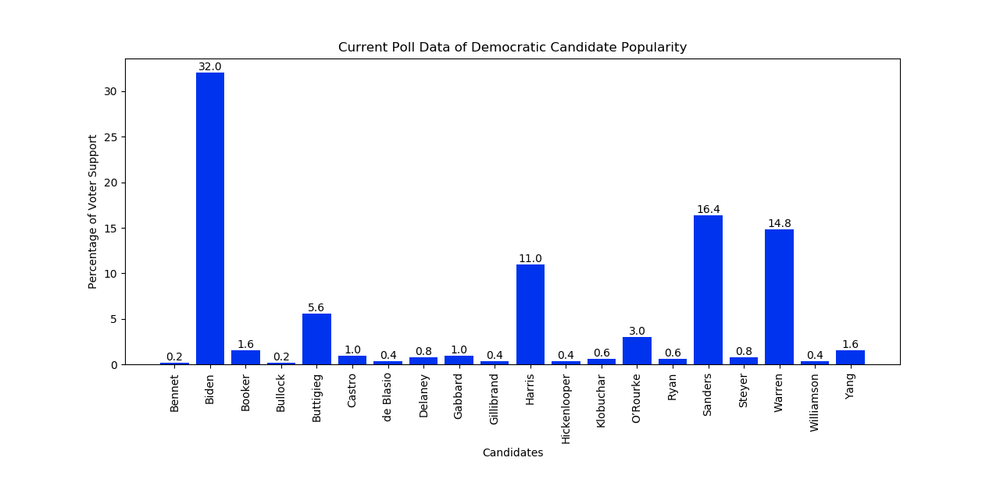

Candidate Popularity
Using current poll data from the end of July 2019, we can see which democratic candidates are standing out as frontrunners for 2020. Still, these results should not influence how you vote. Even though a candidate might not seem too popular, the polls can sometimes be inaccurate and not fully representative of which candidates will be successful in the actual primary.
